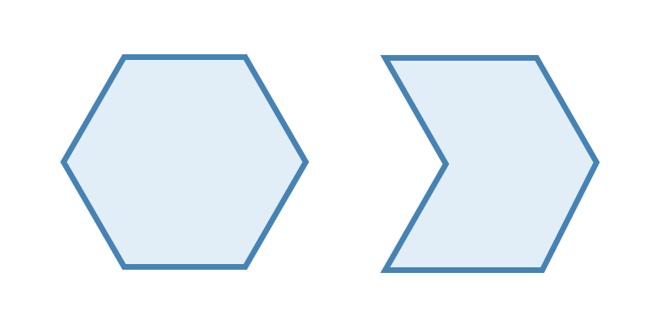
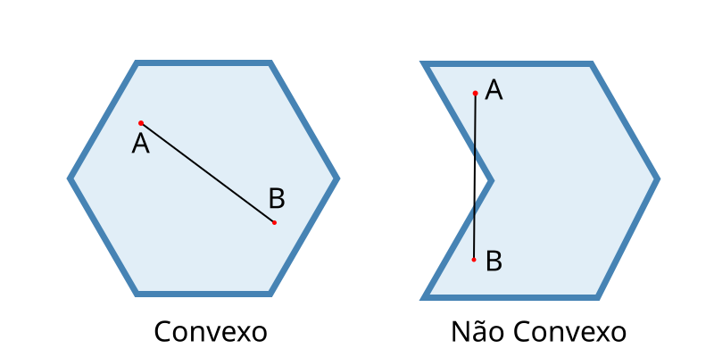
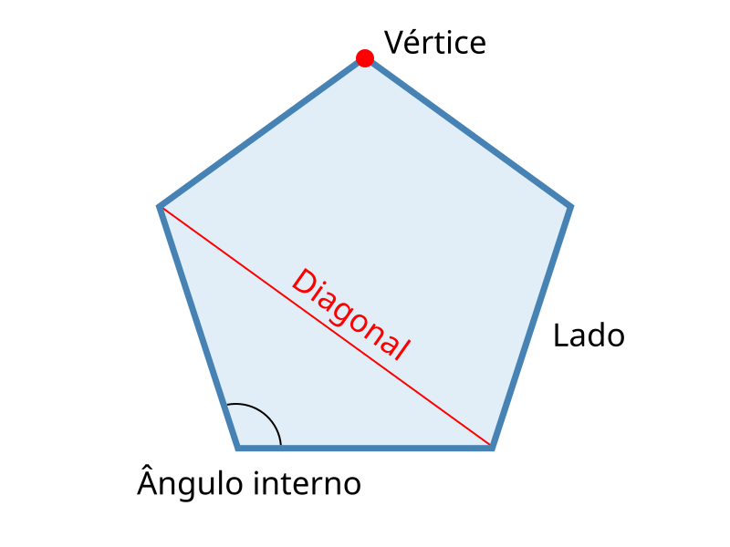
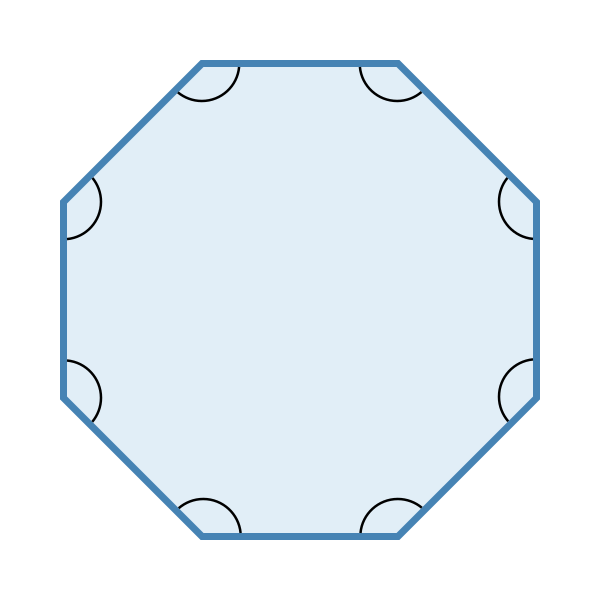

<section class="definition">
  <div class="row definition__group mt-4">
    <div class="col-12">
      <h3>Polígonos</h3>
      <p class="p-justify">
        A palavra "polígono" vem da palavra em grego "polígonos" que significa ter muitos lados ou ângulos. <br>
        Em outras palavras, Polígonos são linhas fechadas formadas apenas por segmentos de reta que não se cruzam.
      </p>
    </div>
    <div class="col-12 col-lg-6 col-xl-6">
      
    </div>
    <div class="col-12">
      <h4>Polígonos convexos</h4>
      <p class="p-justify">
        Um polígono é convexo quando não possui reentrâncias, ou melhor, 
        se pudermos construir ao menos um segmento com as extremidades A e B no interior do polígono, 
        e alguma parte desse segmento estiver fora do polígono, então, esse polígono não será convexo.
      </p>
    </div>
    <div class="col-12 col-lg-6 col-xl-6" style="display: inline-flexbox;">
      
    </div>
    <div class="col-12">
      <p>
        Elementos dos polígonos convexos: <br>
      </p>
      <ul>
        <li><strong>Lados:</strong> são os segmentos de reta que formam o polígono.</li>
        <li><strong>Vértices:</strong> São os pontos de encontro entre os lados de um polígono.</li>
        <li><strong>Ângulos internos:</strong> São os ângulos entre dois lados consecutivos no interior do polígono.</li>
        <li><strong>Diagonais:</strong> São os segmentos de reta que ligam dois vértices não consecutivos.</li>
      </ul>
    </div>
    <div class="col-12 col-lg-6 col-xl-6" style="display: inline-flexbox;">
      
    </div>
    <div class="col-12">
      <h4>Polígonos regulares</h4>
      <p class="p-justify">
        Quando um polígono convexo possui todos os lados congruentes e todos os ângulos internos com a mesma medida, ele é chamado de regular.
      </p>
    </div>
    <div class="col-12 col-lg-6 col-xl-6" style="display: inline-flexbox;">
      
    </div>
  </div>

</section>
